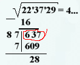
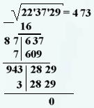
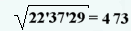

Провели горизонтальную черту и под ней написали результат вычитания
637-609=28.

К числу 28 списали последний разряд исходного числа и получили число
2829. Записали семерку после четверки в результирующее число. Провели
вертикальную черту слева от числа 2829, умножили 47 на 2 и полученное
число 94 приписали слева от вертикальной черты, оставив место в виде
точки для поиска последней цифры.

Цифра 3 подошла в точности, так как
943*3=2829, значит, это последняя цифра искомого числа, т.е.
